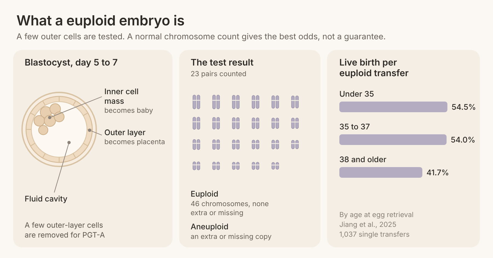
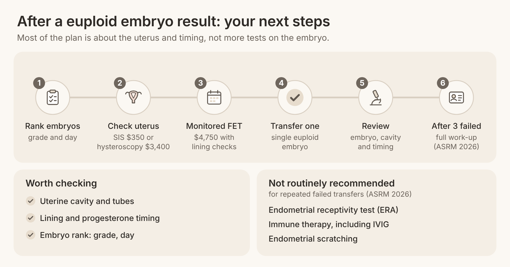

Quick answer: A euploid embryo is an embryo with the normal number of chromosomes, 46 in total (23 pairs), as shown by preimplantation genetic testing for aneuploidy (PGT-A). It has the best chance of any embryo of implanting and becoming a baby, with live birth rates of about 54% per transfer in women under 38 in a 2025 study. It is better odds, not a guarantee, and knowing why helps you plan your next step.
In this article
It is an embryo whose tested cells show exactly 46 chromosomes, with no extra or missing copies. The word comes from Greek: "eu" means good or normal, and "ploid" refers to sets of chromosomes. The opposite is an aneuploid embryo, which has too many or too few chromosomes and usually cannot lead to a healthy pregnancy.
So the euploid embryo meaning is simple: as far as the test can tell, the embryo's chromosome count is normal. You learn this from PGT-A testing, where an embryologist removes a few cells from the outer layer of a day 5 to 7 blastocyst and sends them for analysis. At Aurea Fertility Center, PGT costs $950 per embryo, and the embryo is frozen while you wait for results.
A euploid result tells you about chromosome number only. It does not test every gene, and it does not test your uterus, your lining or the timing of your transfer. That is why a normal result raises your odds but cannot promise a pregnancy.
Euploid: normal chromosome count. Usually first in line for transfer.
Aneuploid: an extra or missing chromosome. Usually not transferred.
Mosaic: a mix of normal and abnormal cells in the sample. Some mosaic embryos can still lead to healthy births, and the choice is made with your doctor and a genetic counselor.
The odds are strongest when you are under 38, your uterus is healthy, and the embryo has good quality. In that setting, about half to more than half of single euploid transfers lead to a live birth.
A 2025 study in the Journal of Ovarian Research followed 1,037 single euploid embryo transfers. The live birth rate was 54.5% for women under 35 and 54.0% for women aged 35 to 37. That is a strong number, and it is one reason many people choose a single embryo transfer instead of two embryos at once, which avoids the risks of twins.
Being under 40 is a good position to act from. You are more likely to make several blastocysts per retrieval, and a higher share of them tend to be euploid. If you want to understand what the letters on your embryo report mean, our embryo grading chart guide explains 4BB, 5AA and the rest.
Some factors lower the odds even after a normal result. Each one has a practical response.
Age at egg retrieval of 38 or older. In the same 2025 study, live birth fell to 41.7% at 38 and over. What helps: banking embryos earlier, and for women over 40 or with low reserve, care at our sister clinic, Rejuvenating Fertility Center.
Lower trophectoderm grade. The outer layer of the blastocyst becomes the placenta. What helps: transferring your highest-graded euploid embryo first.
A problem in the uterus. Polyps, fibroids, scar tissue or fluid in a blocked tube can stop implantation. What helps: a cavity check before transfer, such as a saline sonogram (SIS) or hysteroscopy.
A lining or timing issue. What helps: a carefully monitored frozen embryo transfer (FET) cycle with lining checks before the transfer date.
If you have fluid-filled or blocked fallopian tubes, treating them before transfer is worth discussing, and our HSG test guide explains how tubes are checked.
The research shows that a euploid embryo success rate is high but not 100%, that age still matters a little after testing, and that embryo grade and day matter less than many people expect.
Age still matters, but less. In an analysis of 8,175 euploid single embryo transfers (Journal of Assisted Reproduction and Genetics, 2020), women 38 and older had lower implantation than women under 35, with odds ratios of 0.85 at 38 to 40 and 0.69 above 40. The authors concluded that factors other than chromosomes contribute to age-related decline.
Grade matters a little. A 2025 study of 538 single euploid frozen transfers in Reproductive Sciences found that only the trophectoderm grade made a difference: grade A outer cells had a higher live birth rate than grade C. Expansion and inner cell mass grade did not change the live birth rate.
Day 5 or day 6. In that same study, euploid embryos that formed on day 5, 6 or 7 had similar live birth rates. Across all blastocysts, tested or not, a Human Reproduction meta-analysis found higher live birth after day 5 transfer (risk ratio 1.50), so day 5 euploid embryos are usually transferred first when you have a choice.
The test is accurate, not perfect. The 2024 ASRM committee opinion on PGT-A notes that one study found a positive predictive value of 96% with SNP microarray testing, and that mosaic and false results can occur. It also says routine PGT-A for every patient has not been shown to raise the overall chance of a baby.
Study | Who was studied | Key finding |
Jiang et al., Journal of Ovarian Research, 2025 | 1,037 single euploid transfers | Live birth 54.5% under 35, 54.0% at 35–37, 41.7% at 38+ |
Reig et al., J Assist Reprod Genet, 2020 | 8,175 euploid single transfers | Lower implantation from 38 (odds ratio 0.85 at 38–40) |
Chen et al., Reproductive Sciences, 2025 | 538 euploid frozen transfers | Only trophectoderm grade A vs. C changed live birth; day 5, 6 or 7 similar |
Bourdon et al., Human Reproduction, 2019 | Meta-analysis, all blastocysts | Live birth higher after day 5 than day 6 (risk ratio 1.50) |

A transfer can fail because chromosomes are only one part of implantation. The embryo still has to attach to a receptive lining at the right time, and the test itself has small limits. Women in fertility forums ask this again and again, often after a loss that felt impossible: "Was it fifth time lucky for anyone?"
Here are the main reasons, in plain terms:
The embryo had a problem the test could not see. PGT-A counts chromosomes from a few outer cells. It does not check every gene, and the inner cell mass can occasionally differ from the sample.
The uterus was not ready. Polyps, fibroids, scarring, a thin lining or fluid from a blocked tube can all block implantation.
Timing was off. The lining has a window when it accepts an embryo, and progesterone timing in an FET cycle matters.
Age-related factors beyond chromosomes. Research on 8,175 transfers suggests egg health and other factors still play a role after 38.
Chance. Even under ideal conditions, about half of single euploid transfers do not lead to a birth. One failed transfer does not mean the next will fail.
That last point matters. Many people do go on to succeed. One woman wrote, "I am pregnant from my fourth Euploid and fifth transfer." Another reminded a worried poster that "there's still a good chance it could work!"
The 2026 ASRM committee opinion on recurrent implantation failure defines recurrent implantation failure after 3 to 6 failed euploid transfers. It recommends repeating the uterine and tubal assessment, by saline sonogram, hysteroscopy, HSG or 3D ultrasound, and says hysteroscopy can treat problems found at the same visit.
It also lists tests and treatments that are not recommended routinely for recurrent implantation failure, because they have not been shown to improve live birth: endometrial receptivity testing (ERA), immune therapies including IVIG, endometrial scratching and routine sperm DNA fragmentation testing. Knowing this can save you money and time. If you have had recurrent losses or several failed transfers, our reproductive immunology team can talk through which evaluations make sense for you.
Your next step depends on whether you have euploid embryos waiting, and whether a transfer has already failed. Here is a clear plan.
Rank your euploid embryos. Ask your embryologist to list them by trophectoderm grade and day of development, and transfer the highest-ranked one first.
Check your uterus. If you have not had a cavity check in the last year, or a transfer failed, ask for a saline sonogram (SIS, $350 at Aurea) or hysteroscopy ($3,400).
Plan a monitored FET. A frozen embryo transfer at Aurea costs $4,750, with lining and hormone checks before transfer day.
Transfer one embryo. A single euploid embryo keeps the success rate high and avoids twin risks.
Review after each transfer. If it fails, review the embryo, the cavity and the timing with your doctor before the next one.
After 3 failed euploid transfers, ask for a full recurrent implantation failure work-up based on the 2026 ASRM guidance.
If you do not have euploid embryos yet, our IVF under 40 program and Precise IVF protocols are built around gentle, personalised stimulation. At Aurea, embryos grow in an EmbryoScope time-lapse incubator, which photographs each embryo about every 10 minutes without disturbing it, and iDAScore helps the embryologist rank embryos, with a physician approving every decision. An IVF freeze-all cycle at Aurea costs $6,950, and you can see every fee on our pricing page. Prices can change, and your consult confirms the plan.

How many euploid embryos do I have, and how are they ranked?
Were any results mosaic, and would you consider transferring one?
When was my uterine cavity last checked?
How will you time progesterone in my FET cycle?
What would we change if this transfer does not work?
Your partner's health matters too. Our sperm DNA fragmentation test guide explains when that test is useful before IVF.
In a 2025 study of 1,037 single euploid transfers, live birth rates were 54.5% under 35, 54.0% at 35 to 37 and 41.7% at 38 and older. Rates vary by clinic, embryo grade and uterine health, so ask your clinic for its own figures.
It means the cells tested from your embryo showed the normal 46 chromosomes, with no extra or missing copies. It does not test every gene or your uterus. It tells you the embryo has the best chromosome profile for implantation.
A little. A 2025 study found that trophectoderm grade A embryos had higher live birth rates than grade C, while expansion and inner cell mass grade did not change outcomes. Your embryologist will usually transfer the best-graded euploid embryo first.
Yes. In the 2025 study, miscarriage after euploid transfer was 13.0% under 35 and 12.8% at 35 to 37. A loss after a euploid transfer is a reason to check the uterus and review your plan.
The 2026 ASRM committee opinion defines recurrent implantation failure after 3 to 6 failed euploid transfers. Many doctors review the uterus after the first failure. A full work-up after 3 failed euploid transfers is a reasonable plan to discuss.
In a 2025 study of euploid frozen transfers, day 5, 6 and 7 euploid embryos had similar live birth rates. Across all blastocysts, day 5 transfers do slightly better, so the day 5 embryo usually goes first when you have both.
A chromosomally normal embryo is the strongest one you can transfer, and under 38 about half of single euploid transfers lead to a baby. Euploid means better odds, not a guarantee, and a failed transfer is a reason to review the plan, not a verdict on your future.
At Aurea Fertility Center, we combine AI precision with human understanding to help you choose, time and transfer your embryos with care. Book a free 20-minute nurse call or a $350 physician consult to talk through your embryo report and your next step.